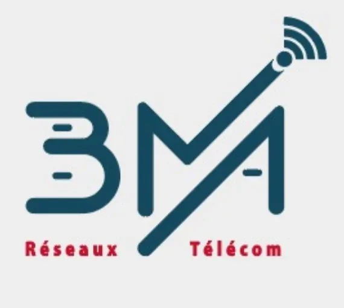
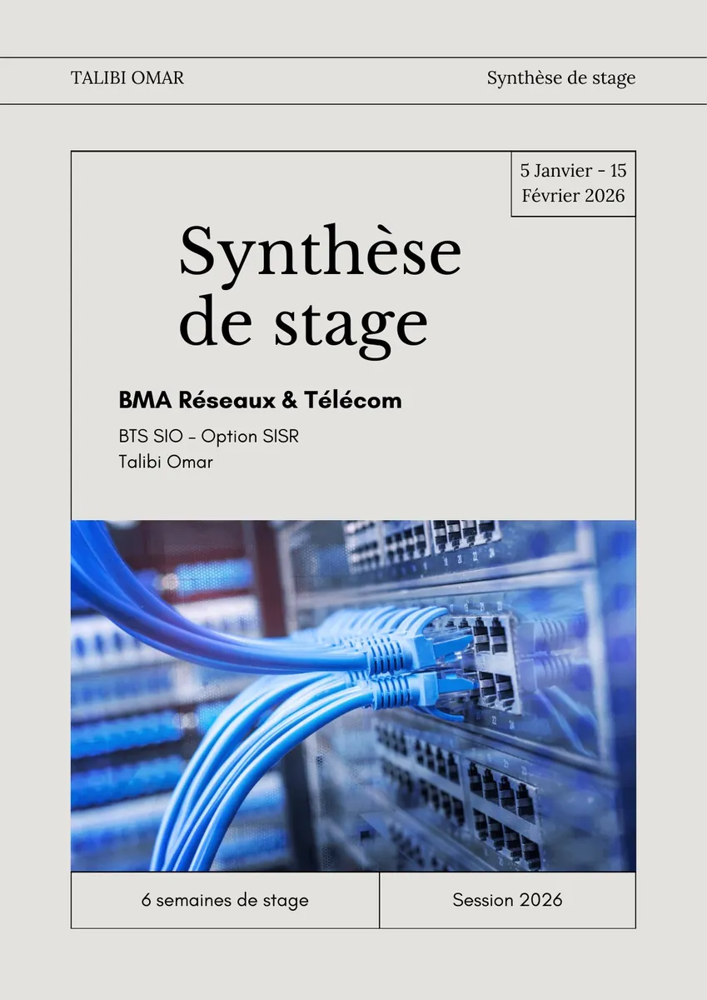
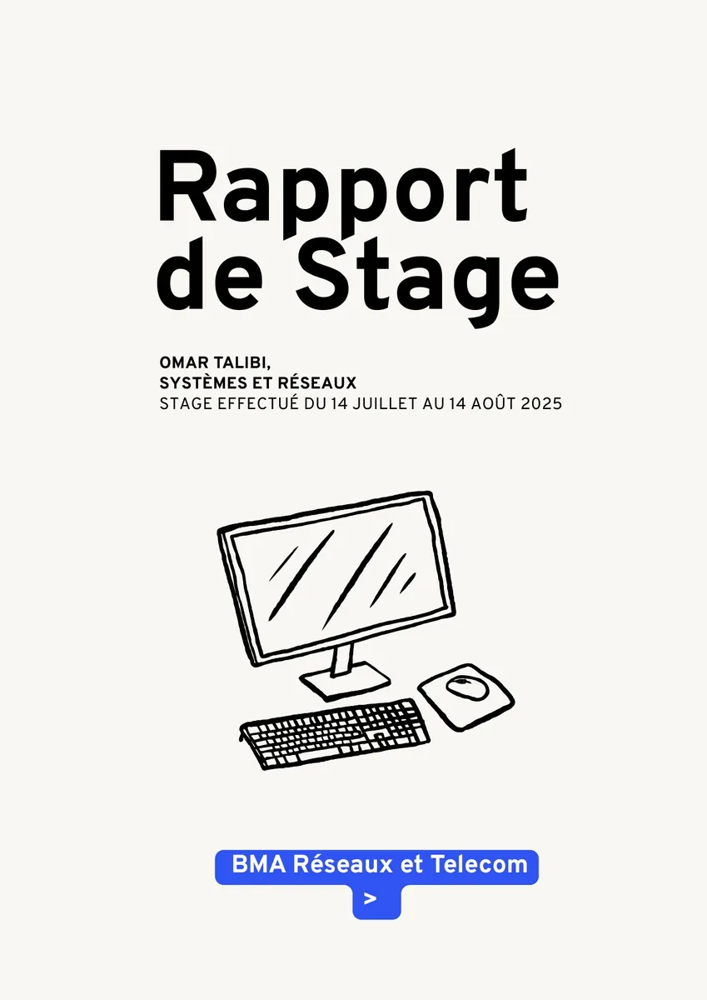

Parcours & Expériences
Expériences professionnelles, formation et certifications
Expériences Professionnelles
Technicien Réseaux & Télécoms (Stagiaire)
BMA Réseaux & Télécom · 2e année

5 Jan. – 15 Fév. 2026Stage axé sur la pratique des configurations réseaux — commandes CLI avancées, migrations d'équipements et conception d'infrastructure complète.
- Configuration complète d'une infrastructure multi-sites pour l'Établissement ELEVEN : VLAN par service, RIP v2, DHCP, SSH, sécurisation des équipements.
- Migration Cisco → OneAccess (sauvegarde config, injection, tests de routage et DHCP).
- Migration DSL → Fibre FTTH / 4G avec vérification VPN IPsec, débit et adressage IP.
- Dépannage avancé : activation SSH (crypto key RSA), diagnostic carte SIM, remplacement SFP 10km → 40km.
- Expertise NRA/NRO avec Orange, diagnostic fibres coupées côté client.

Rapport de stagePDF · 5 janv. – 15 févr. 2026Technicien Réseaux & Télécoms (Stagiaire)
BMA Réseaux & Télécom · 1ère année
Stage axé sur le terrain et l'installation physique — pose d'équipements, câblage et interventions chez des clients professionnels variés (hôpitaux, hôtels, entreprises).
- Installation physique de routeurs 4G/5G, switches, panneaux de brassage et onduleurs Smart-UPS.
- Déploiement fibre optique (FTTH) et remplacement de modules SFP.
- Pose et raccordement de téléphones IP pour une école.
- Utilisation d'outils terrain : testeur de fibre optique, Argus 145 (test VoIP), Dymo LetraTag, DTI Test.
- Interventions chez des clients variés : Hôpital Pasteur, BasicFit, commissariat, hôtels.

Rapport de stagePDF · 14 juil. – 14 août 2025Autres expériences
Employé Polyvalent (Job Étudiant)
Halles de l'Ariane
Gestion de la caisse et accueil client en parallèle de mes études.
Découverte Numérique
Le Hublot
Initiation aux métiers du numérique et création de contenus multimédias.
Parcours Scolaire
BTS SIO — Option SISR
IRIS Mediaschool · Nice
Solutions d'Infrastructure, Systèmes et Réseaux.
Baccalauréat Sciences Physiques
Lycée Hassan 2 · Maroc
Sciences Physiques.
Certifications & MOOCs
Bilan Personnel
Ces expériences m'ont permis de confirmer ma passion pour l'infrastructure réseau. J'ai appris à allier compétences techniques (configuration, dépannage) et savoir-être (relation client, travail d'équipe), des atouts essentiels pour mon futur métier d'Administrateur Système.